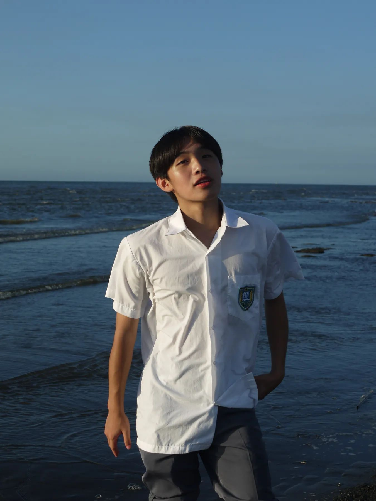
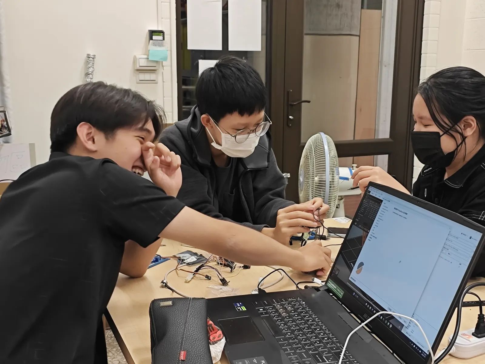
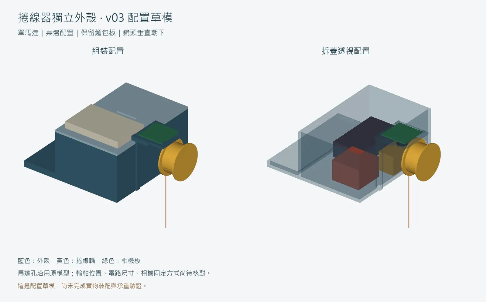
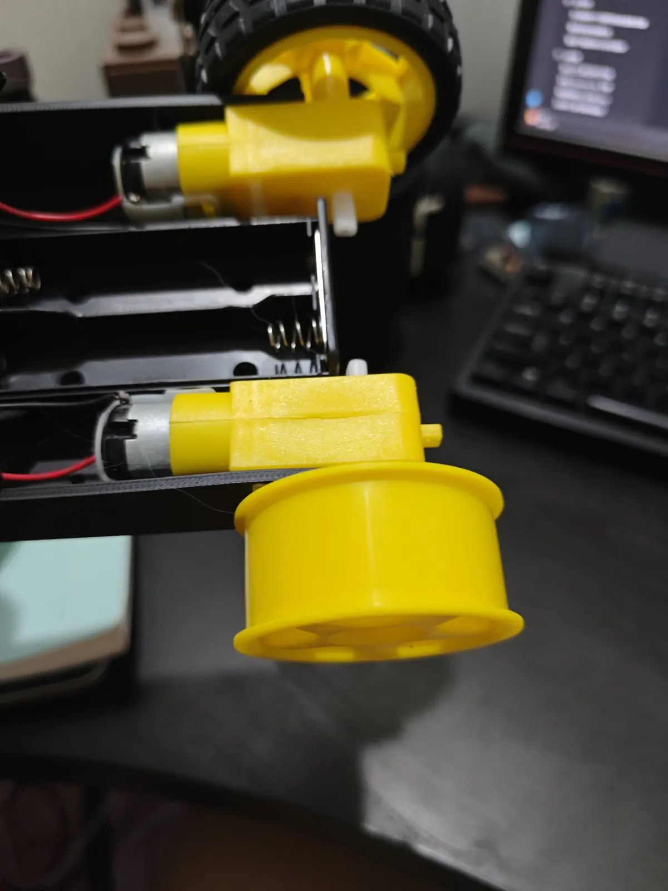
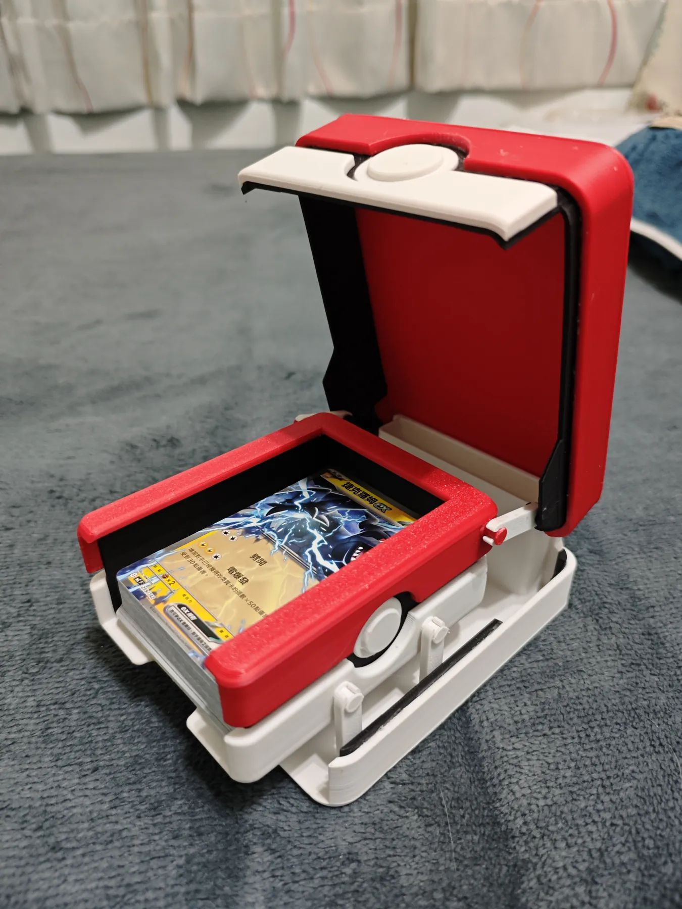

做東西
背單字老是忘，就自己寫了 WordMemo。學校的比賽和獎學金公告散在各處，又做了中原機會雷達。硬體也碰：ESP32 小車、3D 列印。
Johnny（Chuan-Wei Hsu）中原大學 智慧運算與大數據學士班
我寫程式、做硬體，也跳舞、上台主持。習慣從自己卡住的問題出發，把想法做成看得見的東西。
這裡放我做過的事。做成的、還在做的，還有沒做成的，都放。

背單字老是忘，就自己寫了 WordMemo。學校的比賽和獎學金公告散在各處，又做了中原機會雷達。硬體也碰：ESP32 小車、3D 列印。
高中熱舞社的活動兼教學幹部。教舞、辦成果發表會，原定場地不能用的時候，是我去找新場地，演出才辦得成。
主持過丹麥訪問團的交流活動，全程英文。現在是班代和 NUVA 校園大使。
剪過畢業典禮、社團博覽會的影片，自己也在做短影音。
新的在上面，點一下就能展開看細節和照片。右邊的標籤是結果：完成 進行中 沒成功
錄取電資學士班的海外參訪，11 月 23 到 27 日在胡志明市。
申請時寫了交流動機、我做過的影像辨識專案和剪片經驗。錄取之後補完行前資料，也跟學校請好公假和考試假。
申請書裡答應過回國後要交影音成果，到時候會放在 YouTube 作品集。
中原大學職涯發展處主辦。

東海大學和科博館主辦。從零做出一台能降落的機體，最後完賽。
機體是 3D 列印的藍色框架，上面裝飛控、電調和馬達。降落的設計是在機器人社課後和隊友一起討論的。
比賽在體育館。完賽了，沒有得獎。



想知道量子演算法 RQAOA 能不能在排程問題上贏過一般電腦。跑了 116 個題目，還沒贏。
汽車噴漆換色排程上，RQAOA 比一個專用的傳統方法好大約 12–14%。換成一般電腦上更強的禁忌搜尋，它就輸了。三色問題、Wi-Fi 頻道規劃也試過，沒找到優勢。
現在的方向是做一個網站，讓人先檢查自己的問題適不適合用 RQAOA。最終題目還沒定。
8 頁技術企劃，含三視圖、受力估算和預算。
模組靠配重在撞擊前移到定位，讓車身更穩。企劃裡放了三視圖、空載情況的受力估算、8 顆 775 馬達的預算，還有之後要做的配重、同步反應和載貨測試。
目前還是理論估算，實測要等做出來。
每天自動抓學校 16 個公開來源的公告，整理成可以搜尋的網站。
第一個任務做了 LINE 公事小精靈，用 n8n 把 LINE 和 AI 接起來。
公關部部員，正在擔任校外交流活動的副協。
校外交流是好幾所學校一起辦的活動。我參與企劃書和場地座位安排，也整理了 48 家特約商店的優惠標籤。
我負責機構，用 Fusion 360 從 Mk2 改到 Mk4。
每一版都換過配置和零件尺寸。11 月初實測買來的絞盤，捲到定點停不下來，還在找替代做法。


擔任隊長，和學長的團隊一起送件。
指導老師是陳永祥老師。題目是用影像辨識找出地面彈坑，再估算修補需要多少材料。10 月 13 日正式送件，現在還是構想階段，等主辦通知。
隊名「泥好」，永續淨零與綠色創新組。
指導老師是陳永祥老師，題目是道路修復分析。送件當天才發現已經有類似的平台，細節寫在下面「沒成功的事」。

可以無線遙控，也會自己閃開障礙物。
從麵包板接線開始，接上馬達和超音波感測器，裝到車架上。遙控用 ESP-NOW。

卡片收納盒、文具收納盒。
先在 Fusion 360 畫，印出來量，尺寸不合就改圖重印。



單字網站是 WordMemo 的第一版。
復盤工具吃棋譜檔，把每一步分級，下錯的地方給最佳走法。
海外科技交流企劃，進了面試，備取第 2。
報的是海外翱翔組。
畢業典禮、社團博覽會。
教舞、辦成果發表會、借場地。
原定的成發場地臨時不能用，我另外找了一個，演出照常辦完。


破冰遊戲和整場流程都由我用英文帶。

代表班上參加英文簡報成果發表。

有連結的都能直接點進去用。

為什麼：競賽、實習、獎學金的公告分散在學校十幾個網站。
做了什麼：每天自動抓這些公開來源，整理成能搜尋的列表和截止時間表，可以收藏。跟 AI 講自己的興趣和經驗，它會從公告裡挑適合的推薦。架在 Cloudflare。
現在：上線中，來源和功能還在修。
為什麼：下完棋想知道是輸在哪一步。
做了什麼：上傳或貼上棋譜就能一步一步回放。每一步從「超級棒」排到「大錯誤」，下錯的地方會告訴你最佳走法，最後算出雙方的估計評分。
現在：下完棋會拿來用。
為什麼：想試試看讓東西真的動起來。
做了什麼：ESP32、馬達、超音波感測器，從麵包板一路接上車架，再用 ESP-NOW 做無線遙控。
現在：做成了。能遙控，也會自己閃開障礙物。

沒有好結果的也記下來。
青年百億海外圓夢計畫，備取第 2。
海外科技交流的企劃寫了很久，也進了面試，最後還是差一名。原本打算出國拍的短影音也就沒了。
後來：沒等出國，我直接開始做短影音，從選題、拍攝、剪輯到發布一路練。
創天下競賽，截止當天才發現撞題。
送件那天我才查到，我們想做的道路修復分析，桃園已經有在用的平台，也有營造公司做 AI 鋪面檢測。
後來：當天找組員討論要不要換題，最後用原本的題目送出。
量子競賽，到現在還沒找到量子贏的地方。
噴漆換色排程上，RQAOA 比一個專用的傳統方法好了大約 12–14%。換成一般電腦上更強的禁忌搜尋，它就輸了。三色問題、Wi-Fi 頻道規劃也試過，都沒有。
後來：轉去設計一個網站，幫人先檢查自己的問題適不適合用 RQAOA。最終題目還沒定。
捲線器，買來的絞盤不會自己停。
11 月初實測蝦皮買的絞盤，捲到定點停不下來，不符合我們要的用法。
後來：還在找替代做法。
點開可以看大圖。
點照片可以放大。